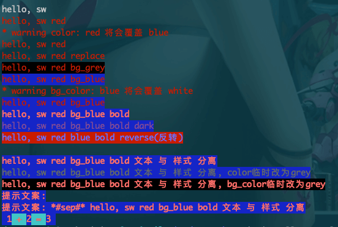

SWTermColor
CLI终端输出彩色的文本, simple termcolor wrapper
https://pypi.org/project/SWTermColor/
源码：https://github.com/shede333/SWTermColor

termcolor
终端的颜色控制 https://pypi.org/project/termcolor/
termcolor2
A simple wrapper for termcolor
对termcolor的一个简单封装
https://pypi.org/project/termcolor2/
click
很推荐，用Click编写Python命令行工具，pocoo出品(Flask也是这家出品的)，用于命令行接口，类似argparse ；
Click is a Python package for creating beautiful command line interfaces in a composable way with as little code as necessary. It’s the “Command Line Interface Creation Kit”. It’s highly configurable but comes with sensible defaults out of the box.
click-man
为 使用click制作的命令行，生成“man pages”；
Automate generation of man pages for python click applications;
Automatic man page installation with setuptools and pip;
源码：https://github.com/click-contrib/click-man
python fire
一个“牛逼”的 Python 命令行解析库，命令行接口自动生成库。
介绍: http://www.oschina.net/p/python-fire
docopt
Pythonic command line arguments parser, that will make you smile
docopt creates beautiful command-line interfaces
源码: https://github.com/docopt/docopt
官网：http://docopt.org/
cement
A Framework, for the CLI Ninja.
Building backend tools, and command line applications shouldn't be a tedious task. Cement provides a light-weight and fully featured foundation to build anything from single file scripts to complex and intricately designed applications. Out of the box, your application has built-in support for configuration files, command line arguments, logging, daemonization, plugins, output rendered from template (such as Mustache, or Genshi), caching, hooks, signal handling, and so much more.
一个框架，CLI忍者。
构建后端工具和命令行应用程序不应该是一个乏味的任务。水泥提供了一个轻量级的、功能齐全的基础，从单一的文件脚本到复杂而复杂的设计应用程序。从这个框中，您的应用程序内置了对配置文件、命令行参数、日志记录、daemoni化、插件、从模板(例如Mustache或Genshi)、缓存、钩子、信号处理等的支持。
CLI: Command Line Interface,命令行接口/界面
官网：http://builtoncement.com/
源码：https://github.com/datafolklabs/cement/
Behold
一款强大的支持 print-style 的调试工具。
Behold 提供了一个用于通过 print 语句进行上下文调试的工具包。 它允许对输出施加统一的外观，对结果进行标记，以便可以通过搜索或过滤器对其进行排序。并且跨模块提供上下文，以便可以在另一个模块中正确调试来自某个模块的函数。Behold 可以处理许多常见的 Python 特定场景，如 printing 对象的内部字典、揭露嵌套的属性、存储和重用结果、在调试过程中的其他点进行比较等等。
bashplotlib
一个终端的绘图库，它允许你使用stdin绘制柱状图和散点图等。
progressbar
console输出进度条
prettytable
Python通过prettytable模块将输出内容如表格方式整齐输出;
主要用于在终端或浏览器端构建很好的输出。
tqdm
显示下载进度的，github源码；
A fast, extensible progress bar for Python and CLI;
https://pypi.python.org/pypi/tqdm
chart
在终端 绘制 柱形图、散点图和直方图 等，0依赖;
https://github.com/maxhumber/chart
colorama
Python的Colorama模块，可以跨多终端，显示字体不同的颜色和背景，只需要导入colorama模块即可，不用再每次都像linux一样指定颜色。
Cross-platform colored terminal text.
https://pypi.python.org/pypi/colorama/
terminal_layout
一个命令行ui布局工具 https://gitee.com/gojuukaze/terminal_layout
Pygments
代码高亮
官网：http://pygments.org/
Python标准库自带的 命令行参数解释器
- docopt
- getopt
- argparse